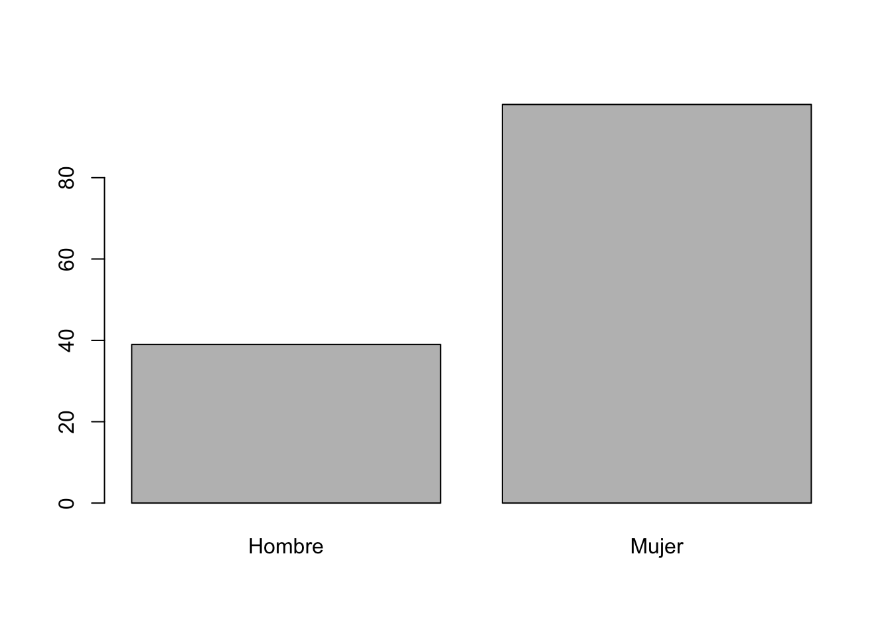

Capítulo 2 R en Acción: Analizando un Estudio Empírico Real
R es una herramienta de análisis muy poderosa. El propósito de este capítulo es principalmente mostrar algunas de las cosas que puede hacer R, especialmente cómo cargar un base de datos desde una pagina web, describir algunas funciones básicas, cómo limpiar una base de datos (esto es particularmente crítico ya que se estima que el 80% del tiempo dedicado al análisis de datos es para limpiar y producir una base de datos que sea analizable) y cómo graficar. Si bien explico los objetivos del análisis de datos para cada parte junto con el código utilizado, la idea principal es ilustrar algunas de sus funcionalidades y no explicar el código de forma extensa. Para eso, está el resto de las secciones del libro. Al final del capítulo, el lector podrá poner en práctica lo aprendido a través un conjunto de ejercicios.
2.1 Cargando una Base de Datos desde la Web
Primero que todo, un breve resumen de la base de datos que utilizaremos en este capítulo. La base contiene datos sociodemográficos, calificaciones de cinco cursos y respuestas a preguntas sobre emociones en el contexto académico de 137 estudiantes de psicología de una universidad pública chilena. De este modo, lo que vamos a hacer es cargar la base de datos para ejecutar nuestros ejemplos. Para esto, vamos a darle un nombre o etiqueta a nuestra base de datos dataset, luego utilizaremos el operador de asignación <- y al lado derecho usaremos la función read.csv() de R, el cual permite leer la base de datos llamada emociones_academicas.csv. Si deseas ejecutar el código contenido en este ejemplo, primero debes tener instalado en tu computador el lenguaje de programación R y RStudio (Para más información ir al capítulo 3, donde están las instrucciones paso a paso de cómo hacer esto). Volviendo al archivo csv, nótese que la base de datos está alojada en una página web y no en nuestro computador personal. Esto ya en sí mismo muestra una de las ventajas de R por sobre otros software de análisis de datos tales como SPSS. Inmediatamente abajo del código para cargar la base de datos, utilizaremos la función names para observar el nombre de las variables contenidas en la base de datos, el cual se encuentra impreso justo debajo de la celda.
dataset <- read.csv("https://raw.githubusercontent.com/danielivanperez/dataset_ejemplo_libro_r/main/emociones_academicas.csv")
names(dataset)## [1] "participante" "edad" "sexo" "Nivel" "calificacion_1"
## [6] "calificacion_2" "calificacion_3" "calificacion_4" "calificacion_5" "promedio"
## [11] "emo_aca_1" "emo_aca_2" "emo_aca_3" "emo_aca_4" "emo_aca_5"
## [16] "emo_aca_6" "emo_aca_7" "emo_aca_8" "emo_aca_9" "emo_aca_10"
## [21] "emo_aca_11" "emo_aca_12"Comentar brevemente los dos cuadros de arriba porque aparecerán muchos similares en el presente capítulo. El primero corresponde a la instrucción que escribimos en R; el segundo, con muchos hashtags o # es el output, salida o respuesta que genera R al interpretar los comandos escritos. Continuando con los primeros pasos en R, para saber el tamaño de nuestra base de datos, podemos utilizar la función dim() de dimensión, la cual nos entrega el número de filas y columnas respectivamente. Apliquemos dicha función a la base de datos recién cargada.
dim(dataset)## [1] 137 22La salida nos dice que hay 137 filas (participantes en nuestro caso) y 22 columnas (o variables). Adicionalmente, una de las funciones más útiles de R es poder observar un conjunto acotado de filas, observaciones o, en nuestro caso participantes, de la base de datos a analizar. Para esto, vamos a usar la función head(). Al ejecutar esta función, R nos muestra las primeras 6 filas de la base de datos.
head(dataset)## participante edad sexo Nivel calificacion_1
## 1 1 19 Femenino 201 4.8
## 2 2 20 Femenino 201 Psicología del desarrollo infanto juvenil 4.7
## 3 3 20 Femenino 201 Desarrollo infanto-juvenil 3,9
## 4 4 20 Femenino 201 Metodologia de la investigación en psicología 38
## 5 5 24 Femenino 302 Psicología educacional 5.0
## 6 6 19 Femenino 201 neuropsicología 37
## calificacion_2 calificacion_3
## 1 3.4 4.6
## 2 Psicología Comunitaria 4.0 Teoría Psicoanalítica 3.2
## 3 Teorias cognitivas 4,9 Metodologia de investigacion 4,8
## 4 Teoria del desarrollo infanto juvenil 53 Teorias cognitivas 48
## 5 Tecnicas proyectivas 6.5 Gestion de personas y desarrollo organizacional 6.3
## 6 metodología de la investigacion en psicologia 30 infanto juvenil 47
## calificacion_4
## 1 3.8
## 2 Teorías cognitivas 3.2
## 3 Psicología comunitaria 4,1
## 4 Psicología comunitaria 33
## 5 Construcción de pruebas e instrumentos de evaluación 5.6
## 6 psicología comunitaria 52
## calificacion_5 promedio emo_aca_1 emo_aca_2 emo_aca_3 emo_aca_4
## 1 3.6 NA 4 2 3 2
## 2 Metodologías de investigación en psicología 3.3 NA 4 1 3 3
## 3 Teoria psicoanalitica no NA 4 3 3 4
## 4 Psicoanalítica 38 NA 3 3 2 3
## 5 psicopatologia infanto juvenil 5.0 NA 3 1 4 4
## 6 psicoanalisis 37 NA 3 1 3 4
## emo_aca_5 emo_aca_6 emo_aca_7 emo_aca_8 emo_aca_9 emo_aca_10 emo_aca_11 emo_aca_12
## 1 3 2 4 2 3 2 3 3
## 2 4 1 2 3 4 1 3 4
## 3 3 3 4 2 3 4 3 3
## 4 2 4 3 3 3 2 3 4
## 5 4 1 4 1 4 2 4 4
## 6 4 1 3 2 3 1 2 5Además de la función head(), también tenemos la función tail(), que nos muestra por defecto las últimas seis de filas o participantes de la base de datos. Veamos un ejemplo abajo:
tail(dataset)## participante edad sexo Nivel calificacion_1
## 132 132 20 Masculino 302 teorias cognitivas 41
## 133 133 20 Femenino 301 Psicopatologia infanto juvenil
## 134 134 20 Femenino 202 no
## 135 135 23 Femenino 202 desarrollo infanto juvenil . 5.4
## 136 136 24 Femenino 302 ANÁLISIS CUALITATIVO 5.4
## 137 137 21 Femenino 202 bases biologicas 42
## calificacion_2 calificacion_3
## 132 análisis cualitativo 44 psicopatología infanto juvenil 44
## 133 Mediación comunitaria Psicologia laboral
## 134 no no
## 135 taller desarrollo personal . 7.0 bases biologicas . 4.9
## 136 PSICOPATOLOGÍA INFANTO-JUVENIL 4.5 PROBLEMÁTICAS PSICOSOCIALES COMPLEJAS 5.3
## 137 ingles III 46 Teorias cognitivas 41
## calificacion_4 calificacion_5 promedio emo_aca_1
## 132 evaluación psicométrica 54 psicologia organizacional 59 NA 3
## 133 Taller de desarrollo personal Problemáticas psicosociales complejas NA 3
## 134 No NO NA 4
## 135 psicologia comunitaria . 4.9 ingles . 5.0 NA 4
## 136 EVALUACIÓN PSICOMÉTRICA 6.5 PSICOLOGÍA ORGANIZACIONAL Y DEL TRABAJO 6.2 NA 4
## 137 psicología comunitaria 47 PSICOLOGÍA DEL DESARROLLO INFANTO-JUVENIL 45 NA 4
## emo_aca_2 emo_aca_3 emo_aca_4 emo_aca_5 emo_aca_6 emo_aca_7 emo_aca_8 emo_aca_9 emo_aca_10
## 132 2 3 3 3 2 3 3 3 1
## 133 2 3 2 3 2 3 2 3 1
## 134 4 3 2 5 1 4 3 3 1
## 135 2 4 4 4 2 3 2 4 2
## 136 1 2 2 2 1 2 3 3 1
## 137 1 4 2 4 1 3 2 3 1
## emo_aca_11 emo_aca_12
## 132 3 3
## 133 3 4
## 134 3 4
## 135 4 3
## 136 3 5
## 137 3 3En el output de arriba, podemos observar las ultimas filas de la base de datos, que van desde la fila 132 a 137. Finalmente, terminar diciendo que si queremos ver un número determinado de observaciones de la base de datos usando la función head() o tail(), podemos escribir el número de filas después de dataset en nuestro caso, separado por una coma. A continuación, muestro un ejemplo para ver las primeras 3 filas de la base de datos:
head(dataset, 3)## participante edad sexo Nivel calificacion_1
## 1 1 19 Femenino 201 4.8
## 2 2 20 Femenino 201 Psicología del desarrollo infanto juvenil 4.7
## 3 3 20 Femenino 201 Desarrollo infanto-juvenil 3,9
## calificacion_2 calificacion_3 calificacion_4
## 1 3.4 4.6 3.8
## 2 Psicología Comunitaria 4.0 Teoría Psicoanalítica 3.2 Teorías cognitivas 3.2
## 3 Teorias cognitivas 4,9 Metodologia de investigacion 4,8 Psicología comunitaria 4,1
## calificacion_5 promedio emo_aca_1 emo_aca_2 emo_aca_3 emo_aca_4
## 1 3.6 NA 4 2 3 2
## 2 Metodologías de investigación en psicología 3.3 NA 4 1 3 3
## 3 Teoria psicoanalitica no NA 4 3 3 4
## emo_aca_5 emo_aca_6 emo_aca_7 emo_aca_8 emo_aca_9 emo_aca_10 emo_aca_11 emo_aca_12
## 1 3 2 4 2 3 2 3 3
## 2 4 1 2 3 4 1 3 4
## 3 3 3 4 2 3 4 3 32.2 Seleccionando Columnas en una Base de Datos
El código de arriba nos muestra las respuestas de los primeros 6 sujetos de nuestra base de datos. Podemos fácilmente ver que la salida o output que nos da R es relativamente extensa. Sería muy ineficiente siempre estar imprimiendo bases de datos de forma completa. Por esta razón, es mucho mejor trabajar viendo un número limitado de variables al mismo tiempo. Empecemos con el caso más simple de explorar solo una variable. A continuación, vamos a mostrar cómo utilizar el símbolo dólar $, el cual nos permite seleccionar una columna o variable de la base de datos. Para proseguir con el ejemplo, nos centraremos en la variable calificacion_1. De este modo, primero escribimos el nombre de la base de datos, seguido del signo dólar y, luego, seleccionar o escribir el nombre de la variables deseada (nótese que seguimos utilizando la función head() con el objetivo de tener solo 6 filas en la salida de R).
head(dataset$calificacion_1)## [1] "4.8" "Psicología del desarrollo infanto juvenil 4.7 "
## [3] "Desarrollo infanto-juvenil 3,9" "Metodologia de la investigación en psicología 38"
## [5] "Psicología educacional 5.0" "neuropsicología 37"La salida de R nos muestra las primeras 6 filas de la variable calificacion_1. Para mencionar otra forma útil de selección de columnas que usaremos más abajo, está elegir un rango de columnas como por ejemplo:
head(dataset[5:9]) ## calificacion_1 calificacion_2
## 1 4.8 3.4
## 2 Psicología del desarrollo infanto juvenil 4.7 Psicología Comunitaria 4.0
## 3 Desarrollo infanto-juvenil 3,9 Teorias cognitivas 4,9
## 4 Metodologia de la investigación en psicología 38 Teoria del desarrollo infanto juvenil 53
## 5 Psicología educacional 5.0 Tecnicas proyectivas 6.5
## 6 neuropsicología 37 metodología de la investigacion en psicologia 30
## calificacion_3
## 1 4.6
## 2 Teoría Psicoanalítica 3.2
## 3 Metodologia de investigacion 4,8
## 4 Teorias cognitivas 48
## 5 Gestion de personas y desarrollo organizacional 6.3
## 6 infanto juvenil 47
## calificacion_4
## 1 3.8
## 2 Teorías cognitivas 3.2
## 3 Psicología comunitaria 4,1
## 4 Psicología comunitaria 33
## 5 Construcción de pruebas e instrumentos de evaluación 5.6
## 6 psicología comunitaria 52
## calificacion_5
## 1 3.6
## 2 Metodologías de investigación en psicología 3.3
## 3 Teoria psicoanalitica no
## 4 Psicoanalítica 38
## 5 psicopatologia infanto juvenil 5.0
## 6 psicoanalisis 37Podemos inferir del código escrito arriba que R le asigna un número a cada una de las columnas de la base de datos empezando desde 1. Al interior del paréntesis cuadrado, le pedimos a R que seleccione desde la columna 5 hasta la columna 9 y que nos muestre sólo estas columnas o variables. De este modo, R muestra los valores desde la variable calificacion_1 hasta calificacion_5.
2.3 Limpiando Valores en una Base de Datos
Volviendo al caso, como podemos ver en las primeras 6 filas de la variable calificacion_1, a los participantes se les pidió escribir sus calificaciones para un curso determinado. Podemos observar que ellos escribieron sus respuestas de diferentes formas. Por ejemplo, escribiendo solo la calificación como en el primer caso, o incluso escribiendo el nombre del curso de manera completa y luego la calificación, en otros casos con un . como en la fila [1], con una , como en la fila [3] o simplemente sin punto ni coma como en la fila [6]. Esto constituiría un primer problema para el analista de datos debido a que no tenemos los valores ordenados y formateados de manera estándar (por ejemplo, tener solo números dos números separados por un .) al interior de la variable. Justamente en este tipo de situaciones es cuando R muestra todo su poder y utilidad.
Como en cada respuesta o celda de la columna tenemos una combinación de texto y números, voy a aplicar una función en R para que transforme todo lo que haya en sus celdas a un tipo de formato llamado character o carácter, el cual se refiere a que la información dentro de cada celda es simplemente texto (en R hay diferentes tipos de datos como los numéricos o numeric). Esto lo hago principalmente para proceder de manera ordenada y evitar posibles errores en el futuro al ejecutar código.
dataset[5:9] <- lapply(dataset[5:9], as.character) # transformar los datos a caracteresDe forma muy resumida, el código de arriba lo que hizo fue aplicar una función que transforma el tipo de datos de cada celda a caracteres a un set de columnas definida desde [5:9] (es decir, desde calificacion_1 a calificacion_5) de la base de datos dataset. Nótese que en la segunda parte del código hay un signo hashtag #, el cual le dice a R que todo lo que está después de dicho símbolo no debe ser ejecutado. El # lo usamos cuando queremos escribir comentarios junto al código para describir qué fue lo que hicimos como una ayuda de memoria (luego de un par de días, semanas o meses, esto será de mucha ayuda) o para explicarle a alguien cada paso del código.
Ahora bien, lo que haremos a continuación es eliminar todo lo que no sea números (letras, puntuaciones, etc.) para las variables calificacion_1 a calificacion_5 y, obviamente, dejar solo números o calificaciones en las celdas. Para esto, utilizaremos el código que está abajo, el cual es aplicado a cada una de las calificaciones existentes en la base de datos con el fin de hacer más comprensible el ejemplo.
dataset$calificacion_1 <- gsub("[^0-9]", "", dataset$calificacion_1)
dataset$calificacion_2 <- gsub("[^0-9]", "", dataset$calificacion_2)
dataset$calificacion_3 <- gsub("[^0-9]", "", dataset$calificacion_3)
dataset$calificacion_4 <- gsub("[^0-9]", "", dataset$calificacion_4)
dataset$calificacion_5 <- gsub("[^0-9]", "", dataset$calificacion_5)Si ejecutamos los nuevos valores contenidos en las columnas 5 a 9, observaremos que solo hay números en las celdas.
head(dataset[5:9])## calificacion_1 calificacion_2 calificacion_3 calificacion_4 calificacion_5
## 1 48 34 46 38 36
## 2 47 40 32 32 33
## 3 39 49 48 41
## 4 38 53 48 33 38
## 5 50 65 63 56 50
## 6 37 30 47 52 37En esta etapa, los valores ya empiezan a estar mucho más ordenados y cada vez están más cerca del formato final que deseamos para ejecutar algunos análisis de datos de utilidad. Sin embargo, todavía tenemos, al menos, dos problemas. El primero es que las calificaciones deberían tener un punto . entremedio de ambos números y, en segundo lugar, que no debemos olvidar que el contenido de las celdas está almacenado como caracteres y no como números. Es muy importante que nuestras variables sean leídas por R como variables numéricas para proceder con la aplicación de funciones cuantitativas. Por ejemplo, si las variables están formateadas como caracteres y queremos aplicar la función de media aritmética, R imprimirá un mensaje de error.
De este modo, lo primero que haremos es resolver el problema del punto entre ambos números. Para esto, usaremos el código que esta abajo. Nótese que cada función se ha aplicado a cada una de las cinco variables por separado con el fin de que el ejemplo sea más entendible.
dataset$calificacion_1 <- sub("(?<=^.)", "\\.", dataset$calificacion_1 , perl=TRUE)
dataset$calificacion_2 <- sub("(?<=^.)", "\\.", dataset$calificacion_2 , perl=TRUE)
dataset$calificacion_3 <- sub("(?<=^.)", "\\.", dataset$calificacion_3 , perl=TRUE)
dataset$calificacion_4 <- sub("(?<=^.)", "\\.", dataset$calificacion_4 , perl=TRUE)
dataset$calificacion_5 <- sub("(?<=^.)", "\\.", dataset$calificacion_5 , perl=TRUE)head(dataset[5:9])## calificacion_1 calificacion_2 calificacion_3 calificacion_4 calificacion_5
## 1 4.8 3.4 4.6 3.8 3.6
## 2 4.7 4.0 3.2 3.2 3.3
## 3 3.9 4.9 4.8 4.1
## 4 3.8 5.3 4.8 3.3 3.8
## 5 5.0 6.5 6.3 5.6 5.0
## 6 3.7 3.0 4.7 5.2 3.7Genial, ahora cada una de las calificaciones tiene un punto que separa ambos valores. Solo con algunas l√≠neas de c√≥digo nos hemos ahorrado, por ejemplo, hacer este procedimiento de forma manual. Es decir, escribiendo un punto para cada valor en las celdas de las variables multiplicado por 137 participantes. Probablemente esto nos hubiera dejado de muy mal humor y habiendo gastado mucho tiempo y con posibles errores en nuestra base de datos ü•≤.
Pero aún queda un problema más por resolver: cambiar el contenido de la celda de carácter a número. Para ilustrar de forma más clara el problema, imaginemos que queremos saber la media aritmética de la variable calificacion_1:
mean(dataset$calificacion_1, na.rm = TRUE) # na.rm = True descarta las celdas sin valores ## Warning in mean.default(dataset$calificacion_1, na.rm = TRUE): argument is not numeric or logical:
## returning NA## [1] NAEl mensaje de error dice lo siguiente: “argument is not numeric or logical: returning NA[1] NA”. Básicamente lo que está sucediendo aquí es que R no puede aplicar una operación matemática a texto o caracteres. Para solucionar esto, solo debemos ejecutar el siguiente código que transformará el texto a números.
dataset[5:9] <- lapply(dataset[5:9], as.numeric) # Convertir columnas de 5 a 9 a numerosAhora apliquemos nuevamente la función de media aritmética a la variable calificacion_1 y veamos qué sucede:
mean(dataset$calificacion_1, na.rm = TRUE)## [1] 4.38176Al fin hemos obtenido el valor promedio para esa columna el cual corresponde a 4.38176. Esto quiere decir que los valores de las columnas están listos para ser analizados cuantitativamente. Antes de pasar a la siguiente sección, me gustaría presentar la función sum() o summary, la cual es una de las funciones más frecuentes de R y, básicamente, nos entrega un resumen general de las variables descriptivas de una variable cuantitativa. Para ilustrarla, apliquemos dicha función a la columna calificacion_1:
summary(dataset$calificacion_1)## Min. 1st Qu. Median Mean 3rd Qu. Max. NA's
## 1.000 3.400 4.400 4.382 5.400 7.000 12La salida de R muestra siete valores: el puntaje mínimo, el puntaje del primer cuartil, la mediana, la media aritmética, el puntaje del tercer cuartil, el puntaje máximo de la columna y el número de celdas con valores perdidos o NA’s (o Not Available).
2.4 Creación de Variables a partir de otras Columnas
Ahora que ya tenemos las columnas de las calificaciones formateadas apropiadamente, vamos a calcular el promedio de las calificaciones. Para esto, vamos a utilizar la función rowMeans() y dentro del paréntesis, escribiremos el set de columnas a utilizar, en nuestro caso, las cinco calificaciones que están contenidas en las columnas 5 a 9. Finalmente, esta nueva columna será agregada a la base de datos bajo el nombre promedio.
dataset$promedio <- rowMeans(dataset[,5:9], na.rm=TRUE)
head(dataset$promedio) # codigo para ver las primeras 6 calificaciones. ## [1] 4.040 3.680 4.425 4.200 5.680 4.060A diferencia de la variable promedio para las calificaciones de los estudiantes, ahora nos centraremos en un constructo llamado “emociones académicas”, la cual se enfoca en consultar a los estudiantes por una variedad de emociones tanto positivas como negativas que son sentidas en una variedad de situaciones académicas. Las respuestas posibles están dispuestas en una escala Likert donde el valor mínimo es 1(“nunca”) y el valor máximo es 5 (“siempre”). Los 12 ítems son resumidos en la Tabla 1.
Tabla 1| Numero | Reactivo a contestar | Nombre en la Base de Datos |
|---|---|---|
| 1 | Cuando estoy en clases, me siento a gusto. | emo_aca_1 |
| 2 | Cuando estoy en clases, me siento enojado. | emo_aca_2 |
| 3 | Cuando estoy en clases, me siento con energía. | emo_aca_3 |
| 4 | Cuando estoy en clases, me siento ansioso (nervioso). | emo_aca_4 |
| 5 | Cuando estoy en clases, me siento entusiasmado. | emo_aca_5 |
| 6 | Cuando estoy en clases, me siento molesto. | emo_aca_6 |
| 7 | Cuando estoy en clases, me siento inspirado. | emo_aca_7 |
| 8 | Cuando estoy en clases, me siento desalentado. | emo_aca_8 |
| 9 | Cuando estoy en clases, me siento satisfecho. | emo_aca_9 |
| 10 | Cuando estoy en clases, me siento triste. | emo_aca_10 |
| 11 | Cuando estoy en clases, me siento relajado. | emo_aca_11 |
| 12 | Cuando estoy en clases, me siento cansado. | emo_aca_12 |
Con el fin de mantener la claridad de los ejemplos y centrarnos en el uso de R para el análisis de datos, procederemos simplemente a construir las variables a partir de las sumatorias de los valores por filas. 1
Lo que haremos a continuación es construir dos variables: emociones_positivas y emociones_negativas. Como podemos observar en la tabla 1, las emociones positivas están dispuestas en los reactivos impares y las emociones negativas están en los reactivos pares, por lo que no podemos simplemente seleccionar un rango continuo de columnas para crear estas nuevas variables.
En este caso, introduciremos una nueva forma de seleccionar variables. Usaremos como siempre el nombre de la base de datos dataset y los paréntesis cuadrados [] para seleccionar las filas y el nombre o etiqueta de todas las variables deseadas entre comillas. Vamos a ejecutar este comando en la consola para examinar el resultado y explicarlo a continuación.
head(dataset[1:137, c("emo_aca_1","emo_aca_3","emo_aca_5","emo_aca_7","emo_aca_9","emo_aca_11")])## emo_aca_1 emo_aca_3 emo_aca_5 emo_aca_7 emo_aca_9 emo_aca_11
## 1 4 3 3 4 3 3
## 2 4 3 4 2 4 3
## 3 4 3 3 4 3 3
## 4 3 2 2 3 3 3
## 5 3 4 4 4 4 4
## 6 3 3 4 3 3 2Como se pueden dar cuenta, llamamos a la base de datos dataset y dentro del paréntesis cuadrado hay espacio para especificar el número de filas que queremos. Tomando en cuenta el ejemplo de arriba, señalamos explícitamente 1:137, lo cual considera a la muestra completa de participantes. Luego de la , lo que hacemos es usar la función c que es una abreviación para la función combine o combinar, lo cual significa que combinará una serie de valores al interior de un paréntesis circular.2 Hacemos esto para referirnos explícitamente al nombre de las variables que forman la variable emociones positivas académicas. Nótese que el nombre de las variables al interior del paréntesis circular están entre comillas "" debido a que son texto o caracteres. Sino escribiéramos las comillas, R nos daría un mensaje de error.
Ahora que explicamos el código de arriba, vamos a proceder a crear una variable llamada emociones_positivas, la cual será agregada a la base de datos con la media aritmética (a través de la funcion rowMeans()) de las seis emociones de la base de datos (emo_aca_1, 3, 5, 7, 9 y 11).
dataset$emociones_positivas <- rowMeans(dataset[1:137,c("emo_aca_1","emo_aca_3","emo_aca_5","emo_aca_7", "emo_aca_9","emo_aca_11")], na.rm=TRUE)Aprovechando el impulso, como ya habíamos adelantado, en R se puede llegar al mismo resultado de diferentes maneras. Ahora, en vez de utilizar el nombre de las variables de la base de datos, vamos a usar los números que hacen referencia a dichas columnas para imprimir en la consola de R las variables de todas las emociones negativas.
head(dataset[ ,c(12,14,16,18,20,22)])## emo_aca_2 emo_aca_4 emo_aca_6 emo_aca_8 emo_aca_10 emo_aca_12
## 1 2 2 2 2 2 3
## 2 1 3 1 3 1 4
## 3 3 4 3 2 4 3
## 4 3 3 4 3 2 4
## 5 1 4 1 1 2 4
## 6 1 4 1 2 1 5Póngase especial atención a el espacio anterior de la coma , al interior del paréntesis cuadrado. ¿Recuerdan a qué corresponde esta posición? Así es !!! A las filas o participantes de nuestra base de datos. ¿Qué hemos hecho? Hemos eliminado 1:137 y la hemos dejado en blanco o sin ningún valor numérico. R automáticamente interpreta esto como si nosotros quisiéramos seleccionar todas las filas de nuestra base de datos. De este modo, podemos utilizar diferentes formas para seleccionar valores en una base de datos. Finalmente, vamos a crear la columna emociones_negativas en la base de datos usando la función rowMeans() con la última forma de seleccionar filas y columnas en la base de datos.
dataset$emociones_negativas <- rowMeans(dataset[ ,c(12,14,16,18,20,22)])Finalmente, mostraremos las primeras 10 filas de las variables recién creadas con el siguiente código:
dataset[1:10,c(23,24)]## emociones_positivas emociones_negativas
## 1 3.333333 2.166667
## 2 3.333333 2.166667
## 3 3.333333 3.166667
## 4 2.666667 3.166667
## 5 3.833333 2.166667
## 6 3.000000 2.333333
## 7 4.166667 1.333333
## 8 2.666667 3.000000
## 9 3.000000 2.666667
## 10 3.000000 3.0000002.5 Graficando Datos
A continuación, exploraremos brevemente algunas variables de la base de datos con el fin de presentar algunas funciones para construir tablas, gráficos de barra y dispersión para formarnos una idea de los datos que disponemos. Nos enfocaremos en la variable sexo en la primera parte de esta sección. Vamos a imprimirla en la consola en el bloque de código de abajo.
head(dataset$sexo)## [1] "Femenino" "Femenino" "Femenino" "Femenino" "Femenino" "Femenino"Oh wait! Al parecer tenemos un problema en la forma en que están etiquetados los valores: femenino y masculino corresponden al género de los participantes. Sería mejor modificar ahora las etiquetas a mujer y hombre, respectivamente. Para esto vamos a usar la librería stringr, la cual forma parte de la famosa librería tidyverse(ver capítulo 6 para más detalles sobre esta librería y cómo instalarla). Corramos la función y, luego, procederemos a describir lo que hay allí.
library(stringr)
str_replace_all(dataset$sexo, c("Femenino" = "Mujer", "Masculino" = "Hombre"))## [1] "Mujer" "Mujer" "Mujer" "Mujer" "Mujer" "Mujer" "Mujer" "Mujer" "Mujer" "Mujer" "Hombre"
## [12] "Hombre" "Mujer" "Mujer" "Mujer" "Mujer" "Mujer" "Hombre" "Mujer" "Mujer" "Mujer" "Mujer"
## [23] "Mujer" "Mujer" "Hombre" "Mujer" "Mujer" "Mujer" "Mujer" "Mujer" "Mujer" "Mujer" "Hombre"
## [34] "Mujer" "Mujer" "Hombre" "Mujer" "Mujer" "Mujer" "Mujer" "Hombre" "Mujer" "Hombre" "Mujer"
## [45] "Mujer" "Hombre" "Mujer" "Mujer" "Hombre" "Mujer" "Hombre" "Hombre" "Mujer" "Mujer" "Mujer"
## [56] "Mujer" "Hombre" "Mujer" "Mujer" "Mujer" "Mujer" "Mujer" "Mujer" "Mujer" "Mujer" "Hombre"
## [67] "Mujer" "Hombre" "Mujer" "Mujer" "Mujer" "Hombre" "Mujer" "Mujer" "Mujer" "Hombre" "Mujer"
## [78] "Mujer" "Hombre" "Mujer" "Hombre" "Mujer" "Hombre" "Mujer" "Mujer" "Mujer" "Mujer" "Mujer"
## [89] "Hombre" "Mujer" "Hombre" "Hombre" "Mujer" "Mujer" "Mujer" "Mujer" "Mujer" "Hombre" "Hombre"
## [100] "Hombre" "Hombre" "Mujer" "Mujer" "Mujer" "Hombre" "Hombre" "Hombre" "Mujer" "Mujer" "Mujer"
## [111] "Hombre" "Hombre" "Mujer" "Hombre" "Hombre" "Hombre" "Mujer" "Hombre" "Mujer" "Mujer" "Mujer"
## [122] "Mujer" "Hombre" "Mujer" "Mujer" "Mujer" "Mujer" "Mujer" "Mujer" "Hombre" "Mujer" "Hombre"
## [133] "Mujer" "Mujer" "Mujer" "Mujer" "Mujer"Primero hemos llamado a la librería stringr (esto se suele hacer solamente una vez) para luego utilizar la función str_replace_all(). Al interior del paréntesis, primero tenemos que escribir la columna de la base de datos, la cual deseamos modificar. Posteriormente, usamos la función c para combinar los elementos al interior del vector y poder aplicar los reemplazos. Para esto, debemos primero escribir entre “” el término a remplazar, en nuestro caso, “Femenino” seguido por el signo =, seguido del nuevo término, “Mujer”. Para poder realizar múltiples reemplazos debemos separar con una , y escribir el término a reemplazar y luego el nuevo término: “Masculino” = “Hombre”. Finalmente, procederemos a ejecutar este cambio en la base datos con el código de abajo.
dataset$sexo <- str_replace_all(dataset$sexo, c("Femenino" = "Mujer", "Masculino" = "Hombre"))
head(dataset$sexo)## [1] "Mujer" "Mujer" "Mujer" "Mujer" "Mujer" "Mujer"Habiendo modificado los valores de la variable sexo ahora procederemos a describir la función table(), la cual crea resultados tabulares de variables categóricas. Apliquemos dicha función a la variable sexo para saber cuántos hombres y mujeres hay en nuestra base de datos.
table(dataset$sexo)##
## Hombre Mujer
## 39 98Con esta simple instrucción, la salida nos dice que hay 98 mujeres y 39 hombres. Ahora para visualizar el resultado de la tabla, usaremos la función barplot() con la instrucción arriba escrita.
barplot(table(dataset$sexo)) #both columns need to be integer
plot(dataset$emociones_positivas, dataset$promedio) #both columns need to be integer
require(stats)
reg<-lm(dataset$promedio ~ dataset$emociones_positivas, data = dataset)
plot(dataset$emociones_positivas, dataset$promedio)
abline(reg, col = "green")
reg##
## Call:
## lm(formula = dataset$promedio ~ dataset$emociones_positivas,
## data = dataset)
##
## Coefficients:
## (Intercept) dataset$emociones_positivas
## 3.8581 0.1914require(stats)
reg_1<-lm(dataset$promedio ~ dataset$emociones_negativas, data = dataset)
plot(dataset$emociones_negativas, dataset$promedio)
abline(reg_1, col = "red")
reg_1##
## Call:
## lm(formula = dataset$promedio ~ dataset$emociones_negativas,
## data = dataset)
##
## Coefficients:
## (Intercept) dataset$emociones_negativas
## 4.828 -0.1482.6 Ejercicios
Si estuviéramos siguiendo los pasos tradicionales en el análisis de datos, probablemente antes de realizar la sumatoria de las columnas, en esta etapa deberíamos ejecutar un análisis de confiabilidad para determinar la consistencia interna de la dimensión.↩︎
Por lo general en los recursos de R, a esto se suele referir como vectores, los cuales son simplemente una secuencia de valores reunidos en una variable.↩︎